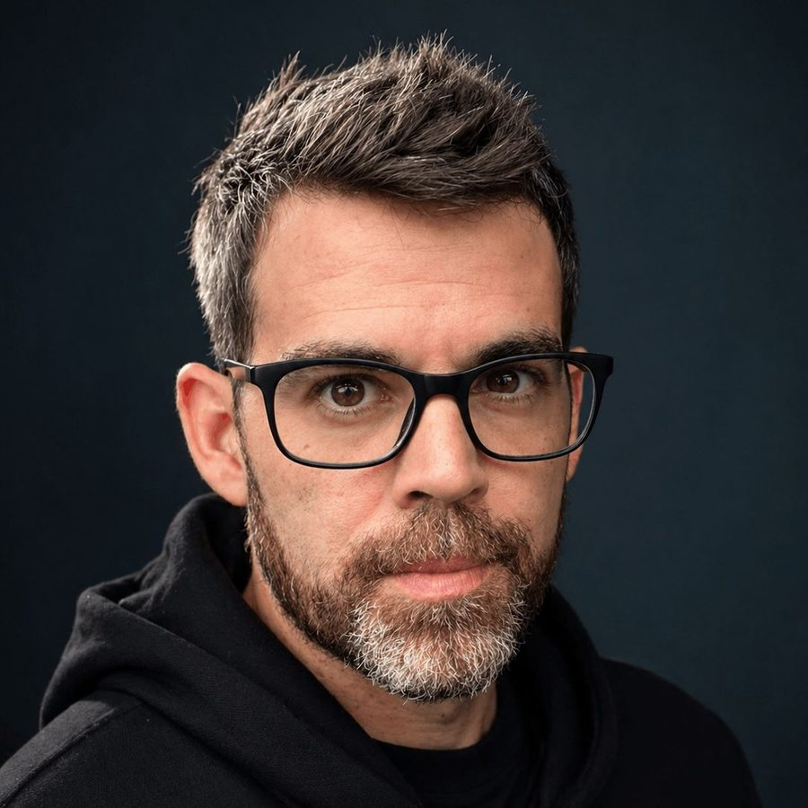

The hardest problems in technology leadership
don't have playbooks.
I help engineering organizations navigate change without losing their top talent or their momentum. Sometimes that means stepping in as an interim or fractional leader. Other times, coaching the managers who carry it.
AI is changing how engineering teams work faster than organizations can adapt. But the challenges go deeper: unclear accountability, struggling managers, difficult people decisions, delivery that isn't working. I've spent 20+ years building and leading technology organizations, and I help leaders work through problems like these.
Let's talk →
I've worked with technology leaders from companies like
Around 900 coaching sessions with 85 leaders across 30 companies, including several years as resident leadership coach at Hotjar.
Three ways to work together
With you — A coach and advisor for the decisions you can't delegate.
I work one-to-one with product and engineering leaders: managers and directors stepping into bigger roles, and CTOs, VPs and founders dealing with difficult decisions, transitions, people problems and organizational complexity.
Sometimes that's coaching. Sometimes it's advice from someone who has sat in the seat. Usually it's some combination of both.
Let's talk about your situation →With your leaders — Build a stronger leadership layer.
For CTOs, VPs and Heads of People who want their managers to grow, I work across the whole leadership layer: new managers who still need the fundamentals, directors making harder calls on people and structure, senior leaders in the middle of ambiguous, high-stakes transitions.
Better managers solve more locally. Fewer escalations reach you. More of your time goes to the work only you can do.
Let's talk about your team →Inside the organization — Interim and fractional leadership.
I work with founders, CEOs and technology leaders when the organization itself needs attention: unclear accountability, leadership gaps, a founder bottleneck, delivery that has stopped working.
That can mean diagnosing it alongside your leadership team, or stepping in as interim or fractional CTO or VP Engineering. Either way, the goal is to strengthen the system and make myself unnecessary.
Let's talk about your organization →Leaders, in their words
The Hagakure
I also write essays about technology, leadership, organizations, and making sense of an increasingly strange industry.
Read The Hagakure →